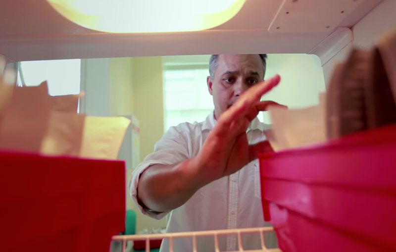
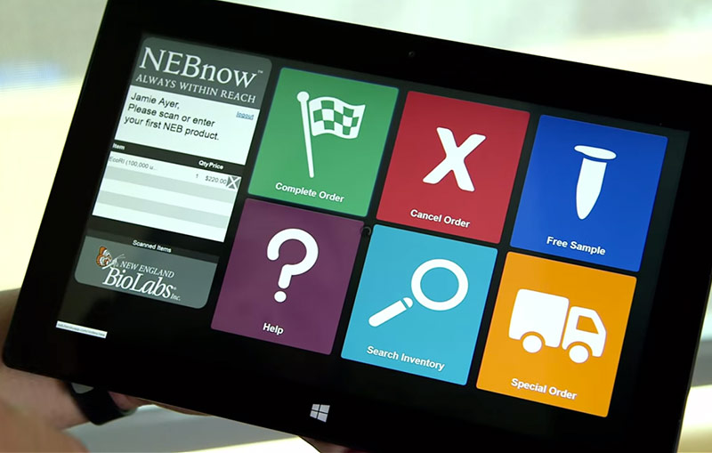

New England Biolabs® Builds Smart Freezers Running on Heroku to Distribute Biotech Products in the Field
Unique Connected Freezer App Delivers Biotech Products, Manages Inventory, and Drives Customer Engagement
For over 40 years, Massachusetts-based New England Biolabs (NEB®) has produced and sold enzymes that are essential to DNA research conducted by the scientific community. Several years ago, the company wanted to address the business inefficiencies associated with manual processes, inventory control, and overall level of customer engagement associated with its Freezer Program channel to market. NEB’s deep commitment to scientific innovation and customer relations drove them to continually evaluate how they could connect more effectively with the researchers using their products and strengthen those relationships.
A First Step — Improving Access to Products
NEB started by placing freezers onsite at customer facilities to improve access to their products over two decades ago. This gave researchers immediate access to the essential enzymes they needed and allowed them to focus on their experiments versus worrying about ordering products well in advance of starting them.
However, this was only one step forward. Although it solved an important pain point for their customers, a simple on-site freezer provided only limited data for the company on who was using their products and when. NEB also couldn’t identify which products had been used and were low on stock until they received a re-order, adding a new challenge to inventory management. Very little insight could be gained that would help them improve their customers’ experience or evolve their product offerings.
NEB needed a solution that allowed them to connect more directly with their research customers and build one-on-one relationships. They wanted to be engaged with the scientists every step of the way, so they could understand how the company could better support them. And they wanted real-time data on the utilization patterns of their products.
Thinking Outside the Box — An Innovative Solution
In 2012, former IT Director Ken Grady attended Dreamforce to learn how other companies were using Salesforce to gain deeper insights about their products in the field and further engage their customers. It wasn’t until he got back to his hotel room and noticed his mini bar that inspiration hit him. What if he could make NEB’s freezers smarter by connecting them to customer and product information in real time via an app?

Taking this vision back to NEB, Ken and his team designed a unique mobile app that could serve as both a customer engagement and inventory management tool. The app would run on a touchscreen interface mounted directly onto the freezer, providing a fully connected, self-contained dispensary that tracks customers, product usage, and inventory. Researchers would use the freezer’s app to log in and open the unit (freezer) and then check out by scanning the products they’ve removed. With the new app, the company could interact with their customers directly, providing product information as well as market other products relevant to that customer. Moreover, the app would help NEB manage and restock their freezers based on rich, real-time data.
NEB’s sales, marketing and support teams were already using Salesforce to manage customer information and technical support requests. As the freezers had already become a primary customer touchpoint, the company realized that by connecting them to Salesforce, they had the potential to completely transform the customer experience and how they do business.
Because of Heroku, for the first time we can spot trends in real time. If we see that customers are often using two products together, we can bundle them, or combine them into a new product to make it easier for them to order in the future.
Andrew Bertera, Executive Director of Marketing, New England Biolabs
NEB partnered with Ionia Corporation (acquired by Xively by LogMeIn) to design and build their freezer app with telematics reporting on Heroku, and data storage in Force.com. They used the available development libraries to access and leverage their Salesforce objects in real-time. Heroku provided the platform layer that enables a seamless and continuous flow of data between the app and database. No other infrastructure was needed. Now, every step of the sales process is connected to Salesforce, from order placement to emailed receipts. The app even tracks freezer temperature and lock status, providing more detail on usage of the units themselves. NEB staff can even view real-time inventory and customer data on mobile devices.
Features within the Salesforce Sales Cloud and Salesforce Service Cloud allowed our team to streamline delivery and focus on the connected freezer and mobile experience.
Joe Gaska, Vice President, Xively and Product Owner

Using the Salesforce family of products also meant that development time was fast – the team built a prototype in 30 days, a beta in 60 days, and went live in production with the pilot version of the system, integrated with their existing ERP system, in 90 days. The Heroku platform allowed them to deliver a secure, encrypted, and scalable solution in record time.
What’s exciting for us about the Salesforce1 Platform is how quickly we’ve been able to move from a legacy and siloed environment of different applications that didn’t talk to each other, to Heroku, which is unified and helps us see our customers in the same way they see us.
Ken Grady, former IT Director, New England Biolabs
The new solution also helped NEB keep their IT costs under control. Because they leveraged their existing platform, the development team already had the skills and architecture in place, making their development approach easier and more cost effective.
App Experience
Once NEB upgraded their freezers with the new app and system, they now had a way to interact directly with their research customers. The freezers stay locked until a scientist logs in using the freezer’s touchscreen interface. After the app authenticates the user, the freezer unlocks and products may be selected. The customer checks out by swiping the products across a barcode scanner mounted to the freezer. They then close the freezer door and confirm that they received the products on the touchscreen, completing the transaction and re-locking the freezer.
It’s been described as an ATM for enzymes.
Andrew Bertera, Executive Director of Marketing, New England Biolabs
The touchscreen can also provide information on new products or bundles that may be of interest to that individual scientist or his/her research project. The app sends purchase information to Salesforce to track inventory and trigger automatic reorder workflows, so the freezers can always be stocked with the right products.
More Stories


Have a question? Give our sales team a call: +1 (866) 278-1349.